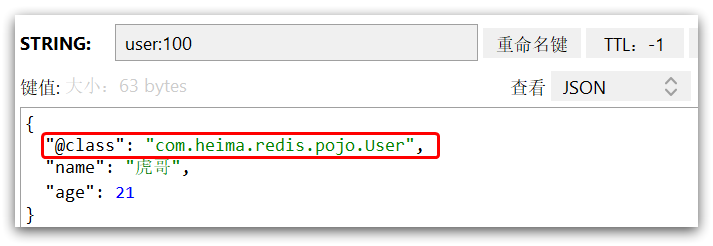
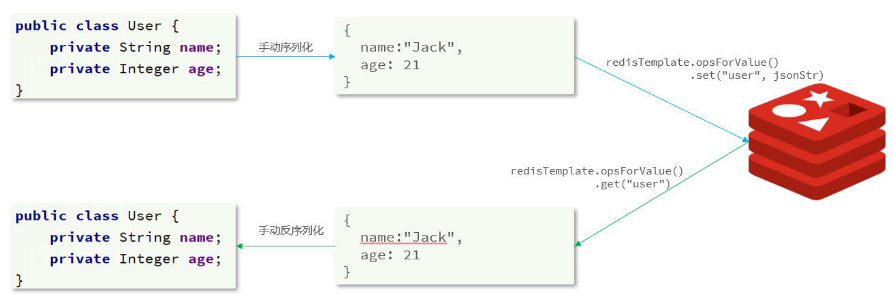

Spring Data Redis 集成了 Jedis 与 lettuce，但有些企业仍在使用 Jedis 而没有用 Spring Data Redis
- Jedis：以 Redis 命令作为方法名称，学习成本低，简单实用。但是 Jedis 实例是线程不安全的，多线程环境下需要基于连接池来使用
- Lettuce：Lettuce 是基于 Netty 实现的，支持同步、异步和响应式编程方式，并且是线程安全的。支持 Redis 的哨兵模式、集群模式和管道模式。
# Jedis
Jedis 使用的基本步骤：
- 引入依赖
- 创建 Jedis 对象，建立连接
- 使用 Jedis，方法名与 Redis 命令一致
- 释放资源
//1. 引入依赖 | |
<dependency> | |
<groupId>redis.clients</groupId> | |
<artifactId>jedis</artifactId> | |
<version>3.7.0</version> | |
</dependency> | |
//2. 建立连接 | |
private Jedis jedis; | |
@BeforeEach | |
void setUp() { | |
// 建立连接 | |
jedis = new Jedis("192.168.150.101", 6379); | |
// 设置密码 | |
jedis.auth("123321"); | |
// 选择库 | |
jedis.select(0); | |
} | |
//3. 测试 string | |
@Test | |
void testString() { | |
// 插入数据，方法名称就是 redis 命令名称，非常简单 | |
String result = jedis.set("name", "张三"); | |
System.out.println("result = " + result); | |
// 获取数据 | |
String name = jedis.get("name"); | |
System.out.println("name = " + name); | |
} | |
//4. 释放资源 | |
@AfterEach | |
void tearDown() { | |
// 释放资源 | |
if (jedis != null) { | |
jedis.close(); | |
} | |
} |
# Jedis 连接池
Jedis 本身是线程不安全的，并且频繁的创建和销毁连接会有性能损耗，因此推荐使用 Jedis 连接池代替 Jedis 的直连方式。
public class JedisConnectionFactory { | |
private static final JedisPool jedisPool; | |
static { | |
JedisPoolConfig jedisPoolConfig = new JedisPoolConfig(); | |
// 最大连接 | |
jedisPoolConfig.setMaxTotal(8); | |
// 最大空闲连接 | |
jedisPoolConfig.setMaxIdle(8); | |
// 最小空闲连接 | |
jedisPoolConfig.setMinIdle(0); | |
// 设置最长等待时间， ms | |
jedisPoolConfig.setMaxWaitMillis(200); | |
jedisPool = new JedisPool(jedisPoolConfig,"192.168.31.128", 6379,1000, "123321"); | |
} | |
// 获取 Jedis 对象 | |
public static Jedis getJedis(){ | |
return jedisPool.getResource(); | |
} | |
} |
# SpringDataRedis
SpringData 是 Spring 中数据操作的模块，包含对各种数据库的集成，其中对 Redis 的集成模块就叫做 SpringDataRedis，官网地址：https://spring.io/projects/spring-data-redis
小提示💡：
RedisTemplate 的两种序列化实践方案：
方案一：
1. 自定义 RedisTemplate
2. 修改 RedisTemplate 的序列化器为 GenericJackson2JsonRedisSerializer
* 方案二：
1. 使用 StringRedisTemplate
2. 写入 Redis 时，手动把对象序列化为 JSON
读取 Redis 时，手动把读取到的 JSON 反序列化为对象
- 提供了对不同 Redis 客户端的整合（Lettuce 和 Jedis）
- 提供了 RedisTemplate 统一 API 来操作 Redis
- 支持 Redis 的发布订阅模型
- 支持 Redis 哨兵和 Redis 集群
- 支持基于 Lettuce 的响应式编程
- 支持基于 JDK、JSON、字符串、Spring 对象的数据序列化及反序列化
- 支持基于 Redis 的 JDKCollection 实现
SpringDataRedis 中提供了 RedisTemplate 工具类，其中封装了各种对 Redis 的操作。并且将不同数据类型的操作 API 封装到了不同的类型中：
| API | 返回值类型 | 说明 |
|---|---|---|
| redisTemplate.opsForValue() | ValueOperations | 操作 String 类型数据 |
| redisTemplate.opsForHash() | HashOperations | 操作 Hash 类型数据 |
| redisTemplate.opsForList() | ListOperations | 操作 List 类型数据 |
| redisTemplate.opsForSet() | SetOperations | 操作 Set 类型数据 |
| redisTemplate.opsForZSet() | ZSetOperations | 操作 SortedSet 类型数据 |
| redisTemplate | 通用的命令 |
SpringDataRedis 的使用步骤：
- 引入 spring-boot-starter-data-redis 依赖
- 在 application.yml 配置 Redis 信息
- 注入 RedisTemplate
1. 引入依赖
<!--Redis依赖--> | |
<dependency> | |
<groupId>org.springframework.boot</groupId> | |
<artifactId>spring-boot-starter-data-redis</artifactId> | |
</dependency> | |
<!--连接池依赖--> | |
<dependency> | |
<groupId>org.apache.commons</groupId> | |
<artifactId>commons-pool2</artifactId> | |
</dependency> |
2. 配置文件
spring: | |
redis: | |
host: 192.168.31.128 # 虚拟机地址 | |
port: 6379 | |
password: 123321 | |
lettuce: | |
pool: | |
max-active: 8 # 最大连接 | |
max-idle: 8 # 最大空闲连接 | |
min-idle: 0 # 最小空闲连接 | |
max-wait: 100 # 连接等待时间 |
3. 注入 RedisTemplate
@Autowired | |
private RedisTemplate redisTemplate; |
4. 编写测试
@SpringBootTest | |
public class RedisTest { | |
@Autowired | |
private RedisTemplate redisTemplate; | |
@Test | |
void testString() { | |
// 插入一条 string 类型数据 | |
redisTemplate.opsForValue().set("name", "李四"); | |
// 读取一条 string 类型数据 | |
Object name = redisTemplate.opsForValue().get("name"); | |
System.out.println("name = " + name); | |
} | |
} |
# SpringDataRedis 的序列化方式
RedisTemplate 可以接收任意 Object 作为值写入 Redis，只不过写入前会把 Object 序列化为字节形式，默认是采用 JDK 序列化，得到的结果是这样的： \AC\XED
缺点：
- 可读性差
- 内存占用较大
我们可以自定义 RedisTemplate 的序列化方式，代码如下：
@Bean | |
public RedisTemplate<String, Object> redisTemplate(RedisConnectionFactory redisConnectionFactory) | |
throws UnknownHostException { | |
// 创建 Template | |
RedisTemplate<String, Object> redisTemplate = new RedisTemplate<>(); | |
// 设置连接工厂 | |
redisTemplate.setConnectionFactory(redisConnectionFactory); | |
// 设置序列化工具 | |
GenericJackson2JsonRedisSerializer jsonRedisSerializer = | |
new GenericJackson2JsonRedisSerializer(); | |
//key 和 hashKey 采用 string 序列化 | |
redisTemplate.setKeySerializer(RedisSerializer.string()); | |
redisTemplate.setHashKeySerializer(RedisSerializer.string()); | |
//value 和 hashValue 采用 JSON 序列化 | |
redisTemplate.setValueSerializer(jsonRedisSerializer); | |
redisTemplate.setHashValueSerializer(jsonRedisSerializer); | |
return redisTemplate; | |
} |
尽管 JSON 的序列化方式可以满足我们的需求，但依然存在一些问题，如图：

为了在反序列化时知道对象的类型，JSON 序列化器会将类的 class 类型写入 json 结果中，存入 Redis，会带来额外的内存开销。所以产生了使用 StringRedisTemplate 这种解决办法
# *StringRedisTemplate
为了节省内存空间，我们并不会使用 JSON 序列化器来处理 value，而是统一使用 String 序列化器，要求只能存储 String 类型的 key 和 value。当需要存储 Java 对象时，手动完成对象的序列化和反序列化。

Spring 默认提供了一个 StringRedisTemplate 类，它的 key 和 value 的序列化方式默认就是 String 方式。省去了我们自定义 RedisTemplate 的过程：
@Autowired | |
private StringRedisTemplate stringRedisTemplate; | |
// JSON 工具 | |
private static final ObjectMapper mapper = new ObjectMapper(); | |
@Test | |
void testStringTemplate() throws JsonProcessingException { | |
// 准备对象 | |
User user = new User("虎哥", 18); | |
// 手动序列化 | |
String json = mapper.writeValueAsString(user); | |
// 写入一条数据到 redis | |
stringRedisTemplate.opsForValue().set("user:200", json); | |
// 读取数据 | |
String val = stringRedisTemplate.opsForValue().get("user:200"); | |
// 反序列化 | |
User user1 = mapper.readValue(val, User.class); | |
System.out.println("user1 = " + user1); | |
} |